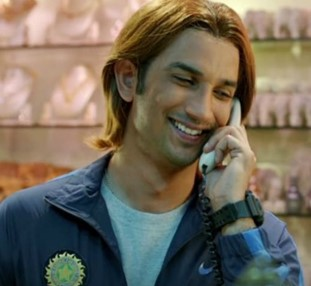
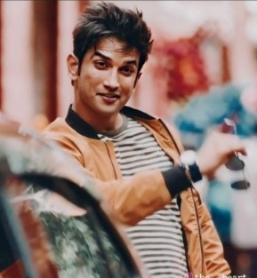

Sushant Singh Rajput.
21 January 1986 – 14 June 2020
A GREAT LEGEND'S LIFE IN BRIEF.....
Sushant Singh Rajput was an Indian actor known for his work in Hindi cinema.
He starred in a number of commercially successful Hindi films such as M.S. Dhoni: The Untold Story (2016), Kedarnath (2018) and Chhichhore (2019). Due to his contribution to the film industry, he received a Screen Award and was nominated for the Filmfare Awards on three occasions. He appeared on Forbes India's Celebrity 100 list twice since 2017. the producer Ekta Kapoor who vouched for him to be cast as the lead in another series Pavitra Rishta. His role was reportedly a breakthrough for him and for which he won various television awards, including his first award for best actor in the Indian Television Academy Awards 2010. Sushant Singh Rajput was born in Patna in the state of Bihar to Krishna Kumar Singh and Usha Singh. He was the youngest of five siblings and had the nickname Gulshan. Rajput was reportedly an avid reader who was deeply interested in astrophysics and won the National Olympiad in Physics. According to Rajput, he did not have any interest in engineering but his family gave him no option which left him dissatisfied. He instead wanted to become an astronaut and later an air force pilot but was also interested in Bollywood, being a fan of Shah Rukh Khan. In 2011, Rajput was spotted by Mukesh Chhabra, the casting director of Kai Po Che!, who invited him for an audition. On 2 May 2018, Rajput was inducted as a partner in a company named Innsaei Ventures, which was founded on 26 April 2018; following which he was appointed as one of its three directors.
A MYSTERIOUS GOODBYE.
On 14 June 2020, Rajput, aged 34, was found dead, hanging from the ceiling fan in his home in Bandra, Mumbai. He had reportedly shown signs of clinical depression and had bipolar disorder. The Mumbai Police commenced an investigation, stating that the death was being treated as a suicide. The postmortem report stated that the cause of death was "asphyxia due to hanging," and called it a "clear case of suicide." The autopsy doctors placed the time of death at 10 to 12 hours before postmortem examination on 14 June at 11:30 p.m.—meaning between 11:30 a.m. and 1:30 p.m. (Indian Standard Time). On 25 July, Rajput's family lodged a first information report with police in Patna, where his father lives, accusing Rhea Chakraborty and five others of abetment of suicide. On 15 October 2020, the CBI said it "continues to investigate the death of Rajput. There are certain speculative reports in the media that the CBI has reached a conclusion. It may be reiterated that these reports are speculative and erroneous.
NONE CAN REPLACE HIM....
SOME MASTERPIECES..

MS DHONI.-2015

DIL BECHARA.-2020